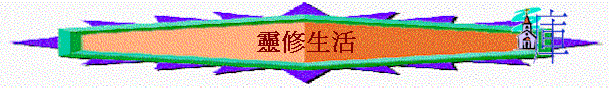

[ Home ] [ Up ] [ 長大成人課程 ] [ 初信造就 ] [ 信徒造就 ] [ 靈修生活 ] [ 基督生平 ] [ 栽培員訓練 ]
目的:
用主日學教授形式(可以互相分享)， 將靈修生活與靈性追求之路教導信徒，內分教師版與學生版．
內容:
[ 1甚麼是靈修？（一） ] [ 2甚麼是靈修？（二） ] [ 3甚麼是靈修？（三） ] [ 4如何靈修？（一） ] [ 5如何靈修？（二） ] [ 6如何靈修？（三） ] [ 7如何靈修？（四） ] [ 8靈性低潮（一） ] [ 9靈性低潮（二） ]
Word 版
hit counter